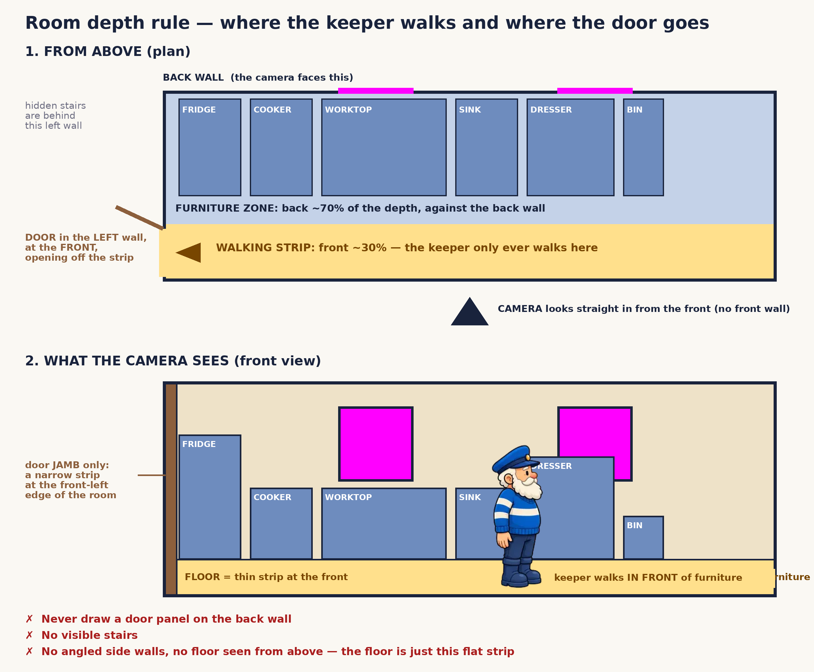
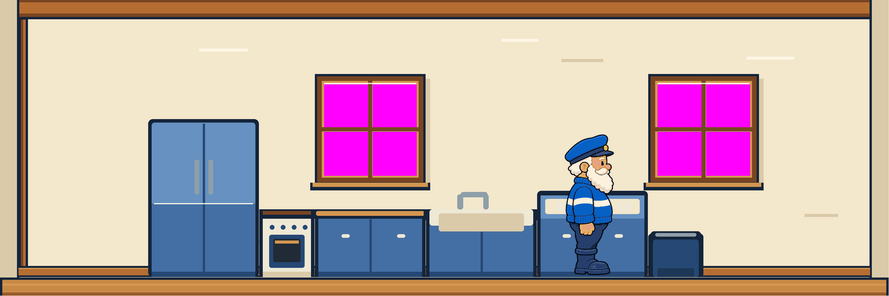
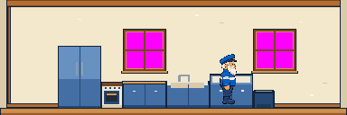

A · high-resolution pixel
- Authoring
- 768 × 256
- Delivery
- exact nearest-neighbour 2×
- Edges
- hard pixels and hard alpha
- Keeper
- 250 px candidate
Same furnished 1536 × 512 room, same Keeper scale, same room-depth rule and same exact-magenta windows. Choose the rendering language only.
Applied room rule: furniture is on the back layer; the Keeper occupies the thin front walking strip; the left circulation opening is a jamb only. No back-wall door, stairs, angled side walls or perspective floor.

Decision: A high-resolution pixel illustration, or B smooth flat-colour illustration. The chosen style freezes until 20 December.


Neither Keeper is canon. The one-band versus two-stripe identity question remains a Gate 3 matter. The illustrative furniture proves depth and style only; it is not a set of production item masters. Palette finalisation, lantern width and the production tower kit also remain unapproved.
Machine record: manifest.json. Provenance and prompts: PROMPT_LOG.md.